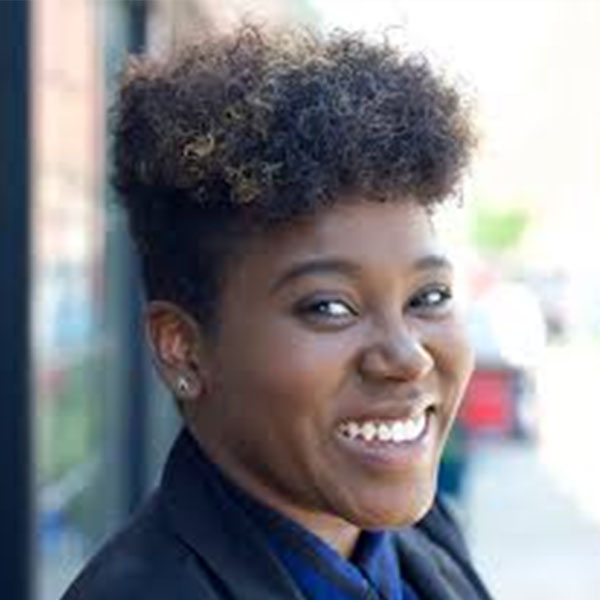

Saturday, February 22
3:00-5:00pm
Sunday, February 23
9:00-9:45am
Registration
Gund Entrance
9:45-10:00am
Opening Remarks
Piper Auditorium
10:00-11:45am
Conflicts in Living Lightning Talks & Panel
Piper Auditorium
Brian Ho
Designer, Sidewalk Labs
Brian Ho is a designer at Sidewalk Labs, leading design for the Generative Urban Design product area at Sidewalk Labs. His work combines machine intelligence, urban futures and human-centered design. Brian worked previously at the Harvard Center for Green Buildings and Cities, the New Urban Mechanics and Leroy Street Studio on digital and physical projects across the domains of scientific research, civic tech, architecture and urban planning. Brian earned a Master in Design Engineering with distinction from Harvard University’s Graduate School of Design and School of Engineering and Applied Sciences, and received a B.A. in Architecture with distinction from Yale. He also teaches in urbanism and urban studies at the Yale School of Architecture.
Ariel Avila
Regional GM, Sonder
Ariel Avila is Sonder's East Coast Regional General Manager. In this role, he oversees ten East Coast markets (from Miami to Montreal), which includes ~2,500 units. Ariel has been with Sonder for nearly three years and has seen the company grow from 100 to 1,200 employees. Prior to Sonder, Ariel spent time at Trunk Club (acquired by Nordstrom) in operations and expansion. Ariel began his career at J.P. Morgan where he spent time in investment banking and equity research. Ariel is a graduate of the University of Illinois, Urbana-Champaign and Harvard Business School. In his spare time, you can find Ariel traveling, staying fit, and trying out Boston's newest restaurants.
Mona Hakky & Jesse Kaddy
Design Directors, Wayfair
Mona leads product design at Wayfair for App, 3D and AR/VR. She has a degree in architecture and over 18 years of experience in digital design strategy & leadership delivering award-winning experiences. With a passion for technology, she brings human-centered design thinking to explore the connections and boundaries of space between digital & physical environments, to deliver seamless and intuitive experiences for the customer. She is a strong believer that technology execution is at its best when it preempts and serves people’s needs without getting in the way.
Jesse is an Associate Director of Experience Design with over 12 years’ experience working with some of the world’s most well-known brands. His primary problem space has been consumer-oriented eCommerce web and mobile app experiences. Over the years, Jesse has established and led high performing UX teams and codified team standards structured around the fundamental ideals of Design-Thinking, Lean-UX, and Agile. He’s a seasoned director of large experience design organizations, who still has the capability to roll-up his sleeves and lead high-impact project work on a large scale.
Kaave Pour
Co-founder, SPACE10
Kaave Pour is the director and co-founder of SPACE10, a research and design lab on a mission to enable a better everyday life for people and planet. Working at the intersection of design, technology and business, he strives to create radical solutions to societal and environmental challenges. Kaaves work includes collaborations with IKEA, Apple, UN, Harvard and MIT among others. Much of it has been acknowledged in the press all around the world and has won numerous awards including D&AD, Webby, Dezeen and Fat Company. Furthermore, he is a frequent speaker and guest lecturer, sharing his thoughts and experiences with global brands, universities, organisations and media to encourage a curious, playful and forward-thinking approach to doing business.
Ana Pinto da Silva
CEO, Minka Homes & Communities
Ana Maria S.V. Pinto da Silva, Co-Founder, CEO — Ana is co-founder and CEO of Minka. Co-founded by renowned geriatrician Dr. Bill Thomas, Minka creates homes, communities, and systems that help people live life on their own terms. Minka provides a radical alternative to traditional senior housing, building intergenerational communities that seek to strengthen connections, improve health and increase wellbeing. As a designer, technologist and community leader, Ana is dedicated to creating products that matter, defining new landscapes of opportunity for people world-wide. She has lead design envisioning initiatives across a wide array of projects including healthcare, education, civics and productivity for Amazon, Microsoft, NBBJ and others. Her work explores the nexus of leading-edge scientific research, design thinking, business development and social change, underscoring the continued need to develop products and services that center under-served populations as both drivers and recipients of first-tier technology innovation. Ana’s work synthesizes her interests in design, game development, storytelling,
Rhiannon Sinclair & Eamonn Hutton
Agency Landscape + Planning
An urban planner with a background in architecture, Rhiannon Sinclair's work focuses on complex urban systems across multiple scales. She uses data-driven strategies to better understand and enhance the relationship between people, buildings, systems and the public realm. Rhiannon has considerable experience communicating information to broad audiences to promote strong community exchange and empowerment within a planning process. In her work, she finds that the role of this type of exchange and master plan facilitation contributes to plans that are visionary, comprehensive, and implementable.
Eamonn Hutton is a landscape architect focused on the planning, design and construction of urban landscapes. Eamonn works across multiple scales, from building city parks and streetscapes to planning city-wide park systems and regional trails. He is passionate about design, drawing inspiration from both natural landscapes and vibrant urban environments. Eamonn’s favorite projects bring people into contact with the natural world through timeless and lasting design
Jeremy Barré
Head of Product Design, Getaround
Jeremy is a design leader passionated about developing innovative services, answering to people & business needs. He is currently working in Paris for Getaround as Head of Product Design (Europe) where he is focusing on improving mobility for people living in cities. Prior to that, he had the opportunity to work for Facebook (Messenger) & Google (YouTube) in California, designing social products to get communities to discover and share their content they love.
Panel Moderator
Megan Nesbeth
frog Design
Megan Nesbeth is a designer, strategist, and doer who empowers people, places, and organizations to thrive using the tools of design research and strategy, complex systems, business frameworks, and the social sciences. She is a Strategist in frog’s New York City studio and serves on Creative Reaction Lab’s Board of Directors. She specializes in the launch and growth phases of human-centered initiatives. She is equipped and ready to take on any industry, but her expertise lies in education, urbanism, and organizational development. She has a knack for drawing insights from the intersections of disparate contexts to create new paths forward, often amongst unlikely allies. Her superpower is asking questions that open new possibilities.
11:45-1:00
Lunch with Speakers
Gund Hall Porticos: 121, 122, 123
1:00-2:45
Conflicts in Human Connection Lightning Talks & Panel
Piper Auditorium
Andrew Lu
Design Lead at Co-Star
Andrew Lu leads product design at Co–Star, the first ever AI-powered astrology app. Andrew previously worked in product at Bloomberg News, Facebook, and Microsoft, and studied graphic design at RISD.
Katie Elfering
Senior Design Manager, Microsoft AI
Katie has built her entire career around asking questions and seeking solutions to basic human needs. In over 15 years of professional experience as a researcher, cultural anthropologist, and trend forecaster, she has focused on understanding the “why” behind the “what,” using those insights to make sense of human behavior and advising leading brands (like Google, Apple, LEGO, Coca-Cola, and Disney, among others) on how to understand human behaviors, values, needs, and emotions in our ever-changing world. She currently leads the ETCH (ethics/trust/culture/humanity) design, research, and strategy team within Microsoft AI.
Matt Daniels
CEO at The Pudding
Matt Daniels is a journalist at The Pudding, a publication for visual essays about complex topics. He grew up in Flint, Michigan, graduated from the University of Michigan with a degree in Business, and he’s very good at designing PowerPoint slides.
Nicole He
Programmer and Artist (former Google Creative Lab)
Nicole He is a programmer and artist based in Brooklyn, New York, currently making videogames, including an upcoming sci-fi voice-controlled game with the National Film Board of Canada. She has worked as a creative technologist at Google Creative Lab, an outreach lead at Kickstarter, and an adjunct faculty member at ITP at NYU, where she received her Master's degree. Nicole's work has been featured in places such as Wired, BBC, The Outline, and The New York Times.
Charles Broskoski
Co-founder, Are.na
Charles Broskoski is one of the many co-founders of Are.na, a platform for connecting ideas and building knowledge. Prior to that he was a software engineer and artist in NYC.
Mauro Martino
Founder and Director of the Visual AI Lab at IBM Research
Mauro Martino is the founder and director of the Visual AI lab at IBM Research, with offices in Cambridge, US, and Professor of Practice at Northeastern University in Boston. His works have been featured in important scientific journals such Nature, Science, PNAS, among all, and textbooks about data visualization: “Data Visualization”, “The Truthful Art”, “The Best American Infographics" 2015 and 2016 editions. Mauro is an award-winning designer whose projects received the Gold Medal at The 2017 Vizzies Visualization Challenge by National Science Foundation, Innovation by Design Award by Fast Company, Kantar Information is Beautiful Award. His projects have been shown at international festivals and exhibitions including the permanente collection of Ars Electronica, RIXC Art Science Festival, Global Exchange at Lincoln Center, the Serpentine Gallery, London, 123 DATA, Paris.
Panel Moderator
Sabrina Osmany
PhD Candidate, Harvard GSD
Sabrina Osmany is a fifth year PhD candidate in Artificial Intelligence & Design Computation at Harvard University's Graduate School of Design. Her research focuses on developing Deep Generative Models of Artificial Imagination. She is co-advised between Harvard and MIT working in collaboration with Isola lab at MIT-CSAIL. Sabrina also works with the OpenAI mentors program, Spring 2020 cohort.
2:45-3:15
Break & Snacks
Piper Entry
3:15-4:45
Conflicts in Inclusion Lightning Talks & Panel
Piper Auditorium
Katie Donley
Leader of Growth, GiveDirectly
Katie leads growth at GiveDirectly, a non-profit that gives cash to poor families, no strings attached. In this role, she leads a cross-functional team focused on driving awareness for direct giving and raising revenue from individuals, institutions, and foundations -- with the ultimate goal of increasing recipient choice in aid allocation decisions. Her team manages the end-to-end donor lifecycle, applying modern and personalized digital marketing tactics to the public sector. Prior to GiveDirectly, Katie led the growth team at Tictail, a marketplace for independent brands, focusing on strategies in organic, paid, and product-driven growth. Katie holds a Bachelors of Economics and Bachelors of Psychology from Yale University. When not at GiveDirectly, she can be found running with the Prospect Park Track Club or at the Park Slope Co-op.
Liza & Victor Quiñonez
Artists and Founders, Street Theory
Street Theory is an award-winning creative agency that activates communities, spaces, and global brands through street-art, experiential marketing, cultural placemaking, branding and design. We are an artist-owned agency, founded by Liza Quiñonez and renowned graffiti/ street-artist Marka27. With over 20 years of experience in large scale public art production, artist management, art and design direction, exhibitions and special events, we use our expertise to implement and execute our Client’s goals at the highest levels of creative expression and strategic planning in the areas of lifestyle, hospitality, retail, real estate, urban planning and community development. We pride ourselves in authentic experiences, bringing art and street culture into all aspects of life and work-- from curating and producing events to empowering communities and working with some of today's most talented and influential artists.
Ashley Louise
Co-founder and CEO, Ladies Get Paid
Ashley Louise is a female entrepreneur and advocate for women. She is currently the Co-founder & CEO of Ladies Get Paid, a platform that champions the professional and economic advancement of women. With over 60,000 members from over 100 countries worldwide, Ladies Get Paid provides women with the tools, resources and community they need to secure a future on their own terms and succeed in their careers. To date, Ladies Get Paid has helped women negotiate over $100,000,000 in raises.
Ashley is a former grassroots organizer, working for national nonprofits like the Human Rights Campaign and the Sierra Club, and most recently was the Head of Business Development at Vimeo. Ashley graduated from Cornell University in 2010 with a degree in Industrial and Labor Relations, is a 2019 New Leaders Council Fellow, and an avid pantsuit enthusiast.
Julia Zeltser
Partner, Hyperakt
Julia Zeltser is a founding partner and creative director at Hyperakt. With over 15 years of design experience in print, brand development, visualizations, and interactive media, Julia has been instrumental in establishing Hyperakt’s visual voice. Julia leads a multi-disciplinary team of designers in a wide range of assignments. She has advised clients such as ACLU, Ford Foundation, and UNICEF to extend their brand in print and interactive media. Julia initiated and leads Lunch Talks at Hyperakt: a monthly event to ignite collaboration and idea-sharing among the design community.

Subhi Taha
Founder, SUBHITAHA
Subhi Taha's work as a designer and online content creator is influenced mainly by his faith as a Muslim and heritage as a Palestinian-Filipino. His professional background is in social media and art direction but he moonlights as a Youtuber and head of his self-titled modestwear line "SUBHITAHA." His Youtube videos and online content aims to normalize Muslim lifestyle by sharing the day-to-day experiences of an average Muslim-American and discussing issues within and against the Muslim community. His MBA and social media presence paved the way to launch his clothing line and provide modestwear by reviving dying elements of traditional clothing from regions inflicted with war, colonization, and the erasure of history.
Ahmed Ansari
Lecturer in Design Studies, Carnegie Mellon University
Ahmed Ansari has a PhD in Design Studies from Carnegie Mellon University and is an Industry Assistant Professor and Director of the PhD program in Technology, Culture and Society at New York University, where he teaches courses in interaction and systems design, speculative design, critical cultural studies, and philosophy of technology. His research deals with decolonising knowledge production in design theory and history, South Asian histories and genealogies of technology, and design ethics and politics
Panel Moderator
De Nichols
Loeb Fellow
De Nichols is currently a Loeb Fellow in residence at Harvard University. As an artist, civic designer, social entrepreneur, and keynote lecturer, she’s mobilized changemakers nationwide to develop creative approaches to the social, civic, and racial justice issues that matter most to them and their communities.
4:45-5:00
Closing Remarks
Piper Auditorium